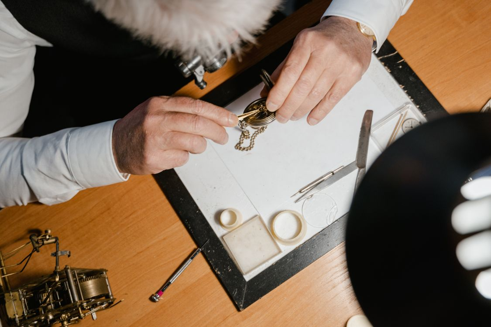

The atelier — the man, the method, the ethics
Trained to repair. Practised at refusing.
Séverin Aubert trained at a Geneva watchmaking school, served his apprenticeship under a master restorer in the Vallée de Joux, and spent his bench years in the restoration department of a manufacture — the room where a house keeps its own history alive, and where he learned the trade's first lesson: the watches that come back worst are usually the ones somebody once “improved.”
He opened this atelier in 1998 to work the other way. Six to eight watches a year, no more: tourbillons, repeaters and grand complications for collectors, and conservation work for museums. The slowness is not a luxury posture. It is what the ethics below cost in hours — documentation before disassembly, an argument with the owner before intervention, and a record written as if it will be read in a hundred years, because it may be.
His opinion, held for twenty-eight years and printed here because a restorer should have one: a watch is not made valuable by being made new. Patina is not dirt. Wear is not failure. The bench's job is to hand the future a watch that still testifies — and testimony, once polished away, does not come back.

How a treatment runs
Seven stages, in order, none skippable- 1Assessment & condition report. The watch is examined, photographed and graded (Table G) before any price is discussed. The report — CHF 450, credited in full if the watch proceeds — states what is wrong, what class the grade assigns, and what the atelier will refuse to do, in writing, in advance.
- 2Documentation. Before a screw turns: full photographic record, measurements, and a note of every mark of age, wear and earlier work. This is the state the treatment will be judged against.
- 3Disassembly. The movement comes apart in sequence, each part to its labelled place, each stage photographed. Nothing is cleaned yet; dirt is evidence too, and it is read before it is removed.
- 4The class decision — made with the owner. The grade proposes a class (Table M); the owner hears the argument, including the argument for doing less, and signs the class before treatment begins. R-124 sits in the register today at exactly this stage. A signature is not a formality here: it is the moment the future is argued with, and won or lost.
- 5Treatment. Cleaning, corrosion arrested, fabrication where fabric is missing, regulation prepared. Original parts are set aside, never discarded — if a part truly cannot carry its load, it is photographed, documented and returned with the watch.
- 6Regulation. The movement is timed across positions over days, and the measured range — not a promise, a measurement — is entered in the record against Table R.
- 7The record. Bound and delivered with the watch: photographs before, during and after; the parts list; the rate; the refusals and their reasons. A copy stays in the atelier's archive, so the next restorer — in fifty years, or a hundred — starts from evidence, not guesswork.
The ethics, in full
Three classes. No fourth exists.Every intervention at this bench belongs to exactly one of three classes. They are defined here, printed in every assessment report, and enforced by the Scope Planner in The Report — the tool cannot quote what the ethics forbid.
| Class | Definition | What it never does |
|---|---|---|
| Conserve | Stabilise only. Active harm — corrosion blooming, a fracture spreading — is arrested; the watch is documented and returned in its found state. Nothing is replaced, nothing is improved. | It never opens what does not need opening, never regulates for a published figure, never makes a watch “presentable.” |
| Restore | Repair to running order. Corrosion arrested, the train rebuilt, regulation performed — with original fabric kept wherever it can still carry its load. | It never polishes a case, never refinishes a dial, never brightens a screw for appearance, never replaces a part that wear has not already condemned. |
| Reconstruct | Reserved for missing fabric, and only ever as an element within a Restore. The missing part is made on the bench, to the original's pattern, in period-correct material and finish. | It never passes new work off as old. Every fabricated part is named as fabricated — in the record, and in print, as the case files show. |
- §No polish, no refinish. Cases are not polished and dials are not refinished at this bench, under any class, at any fee. Polished metal is gone metal; a refinished dial is a replaced document.
- §Original parts are returned. Any part removed — fractured, wrong, or worn past service — is photographed, documented and returned with the watch in the record's envelope. Nothing from a client's watch is kept, sold or reused. Ever.
- §Refusals are part of the practice. A Grade IV watch is refused restoration, and the refusal is written, with its reasons, in the assessment report. Twenty-three watches stand in the record as conserved-not-restored. A bench that will not refuse is not conserving; it is merely charging.
- §Rates are measurements, not adjectives. Post-treatment rates are published as measured ranges (Table R). A 120-year-old movement will not be described as keeping “chronometer time,” because it does not, and saying so would be the first lie in its next hundred years.
Terms of engagement
The same terms are printed in every assessment report- §Assessment. CHF 450 per watch, including the written condition report and grade. Credited in full against the treatment if the watch proceeds — including when the report's recommendation is to conserve, and the owner accepts it.
- §Deposit & balance. On signature of the class decision: a deposit of 30% of the low end of the quoted fee range. The balance falls due on delivery of the watch and its record. If treatment uncovers harm the assessment could not see, work stops and the owner is consulted before a further franc is spent.
- §Transit & insurance. Watches travel insured, by courier, in both directions — arranged by the atelier at CHF 180 per watch, or by the owner at their own arrangement. Every watch is insured at its assessed value for the whole time it is out of its owner's hands, and is photographed on arrival before its box is fully opened.
- §The queue. The bench takes six to eight watches a year. Assessments are currently being booked for February 2027. The queue is published rather than hinted at, because a restorer who cannot say when he will start has no business saying what he will charge.
- §What the atelier does not do. It does not sell watches, broker them, or value them for sale. It does not service modern production watches. It does not authenticate for the trade. Restoration and conservation are the whole practice.
The ethics are not a preface to the work. They are the work. Everything else is technique.
Send a watch's particulars →